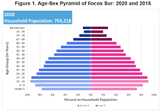

As of the 2020 census, Ilocos Sur has a population of approximately 726,000 people. The majority of the population are Ilocanos, who are known for their strong sense of cultural identity and traditions. The primary language spoken in the province is Ilocano, although Tagalog and English are also widely understood. The province of Ilocos Sur is classified as a first-class province in Region 1 with 2 congressional districts, 2 component cities, 32 municipalities, and 768 barangays. According to the 2020 Census of Population and Housing (2020 CPH), it has a total population of 706,009 persons. Of this total, the household population comprised 99.75 percent or 704,218 persons. Of these, 355,807 persons (50.5%) were males while 348,411 persons (49.5%) were females. By age group, 178,736 persons (25.4%) were under 15 years of age (young dependents). On the other hand, persons aged 15 to 64 years (working-age or economically-active population) totaled 464,335 persons (65.9%) while those in age groups 65 years and over (old dependents) comprised the remaining 61,147 (8.7%). In 2015, persons aged 0 to 14 years, 15 to 64 years, and 65 years and over accounted for 28.2, 64.1, and 7.7 percent, respectively, of the household population. Moreover, there were more males (84.6%) than females (80.7%) among the 0 to 54 age group. Meanwhile, among the older age group (55 years and over), females (19.3%) outnumbered males (15.4%). The same trend was also observed in 2015.
